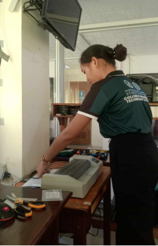
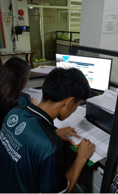

Daily Logs
Day 1
Today marked the start of my on-the-job training at the Department of Environment and Natural Resources (DENR), where I was assigned to handle data entry for the payroll system. I approached this new role with excitement and determination to learn and contribute effectively. Upon arriving at the office at 7:00 AM, I was warmly welcomed by my supervisor, who began the day with a brief orientation. During this session, I received an overview of the department and the importance of accurate payroll data entry, helping me understand the critical role I would play in ensuring employees' information is correctly recorded and maintained. Following the orientation, my supervisor introduced me to the payroll software used by DENR, guiding me through its main features and demonstrating how to input, update, and verify employee details, which provided me with a practical understanding of the system. Once I felt comfortable navigating the software, I was tasked with entering employee information, including names, PhilHealth IDs, salary details, and bank account numbers, with a strong emphasis on accuracy and attention to detail. After completing the initial data entry, my supervisor and I conducted a quality check to verify the accuracy of the information, and I received constructive feedback and guidance for improvement. Although I faced a few challenges, particularly in familiarizing myself with the software interface, my supervisor's patience and support helped me overcome these obstacles. By the end of the day, I felt more confident in using the payroll system, which will undoubtedly help me perform my tasks more efficiently in the future.
Day 2
On the second day of our on-the-job training, our supervisor taught us the essential skills of UTP cable crimping and testing. We started by learning the correct way to cut the cables to the proper length and strip the outer insulation to expose the individual wires. Our supervisor showed us how to arrange the wires in the correct color sequence, following the T568A or T568B standard. We then carefully inserted the wires into the RJ45 connectors, ensuring they were fully seated before using the crimping tool to secure them in place.
After completing the crimping process, we moved on to testing the cables to verify our work. Our supervisor explained the importance of using a cable tester to check for continuity and proper connections. We tested each cable we made, checking for any issues such as crossed wires or poor connections. This immediate feedback helped us understand the importance of precision and attention to detail in the crimping process. By the end of the session, we felt more confident in our ability to create and test UTP cables effectively.
Day 3
On the third day of my on-the-job training at the Department of Environment and Natural Resources (DENR), our supervisor taught us how to perform preventive maintenance on computers and printers. We began by learning how to use disk cleaning tools to ensure that the computers run smoothly. Our supervisor demonstrated how to use built-in software like Disk Cleanup to remove unnecessary files, clear caches, and delete temporary files that can slow down the system. This process helps in maintaining the performance and efficiency of the computers. After ensuring the computers were cleaned and optimized, we moved on to the maintenance of printers. Our supervisor showed us how to check and clean the printer nozzles, replace toner or ink cartridges, and clear any paper jams. We also learned how to test the ink levels in laptops connected to the printers to ensure there were no issues that would affect printing quality. This hands-on training was invaluable, providing us with practical skills to keep both computers and printers in optimal working condition.
Day 4
On the fourth day of my on-the-job training at the Department of Environment and Natural Resources (DENR), our supervisor assigned us the task of organizing paper files related to the Department's Payroll Information System (DPIS). This task was crucial in ensuring that all documents were properly filed and easily accessible.
We started by sorting through a large stack of paper files, ensuring that each document was in the correct order by date. Our supervisor emphasized the importance of accuracy and attention to detail, as these files are essential for maintaining accurate payroll records. We carefully reviewed each file, checking for completeness and ensuring that all information was correctly recorded.
After sorting the files, we organized them into appropriate folders and labeled each folder with the corresponding dates and relevant information. This step was vital in creating an efficient filing system that would make it easier for staff to locate and retrieve documents when needed. By the end of the day, we had successfully organized all the paper files, ensuring they were neatly arranged and accurately dated. This experience reinforced the importance of meticulous organization and record-keeping in maintaining an efficient and effective office environment.
Day 5
On the fifth day of my on-the-job training at the Department of Environment and Natural Resources (DENR), my supervisor assigned me to handle data entry tasks for the Department's Personnel Information System (DPIS). This assignment involved inputting detailed personal information for employees, including family backgrounds, educational histories, work experiences, and other personal details. My supervisor provided me with a thorough overview of the DPIS interface and the specific procedures required for accurate data entry. Armed with this knowledge, I began entering the data, ensuring each piece of information was correctly formatted and accurately inputted. Throughout the day, I meticulously entered data, double-checking each entry for accuracy. This experience reinforced the importance of precision and attention to detail, especially when handling sensitive employee information. By the end of the day, I had successfully entered a significant amount of personal information into the DPIS, enhancing my data entry skills and contributing to the maintenance of comprehensive employee records.
Day 6
On the sixth day of my on-the-job training at the Department of Environment and Natural Resources (DENR), we began our day by attending a community consultation event organized in collaboration with the local barangay. This event included free medical consultations, with doctors and nurses visiting the DENR office to offer their services. My colleagues and I took the opportunity to consult with the healthcare professionals, who provided us with vitamins and valuable health advice.
After the medical consultation, our supervisor assigned us to a technical task involving the department's computer equipment. We were instructed to inspect the CPUs to identify any issues. Carefully, we checked each CPU, diagnosing problems and separating those with battery damage. To ensure prompt repair, we labeled the damaged units clearly with "battery damage" tags. This systematic approach will help in acquiring new batteries quickly, ensuring that the equipment will be back in working order as soon as possible.
This day was a blend of community engagement and technical work, highlighting the diverse responsibilities in our roles. The medical consultation event underscored the importance of health and well-being, while the technical task honed our skills in diagnosing and addressing hardware issues, contributing to the smooth operation of our office’s IT infrastructure.
Day 7
On my seventh day of on-the-job training at DENR, I was once again assigned to the payroll department, but this time with a specific focus on setting up employee deductions. My supervisor entrusted me with the responsibility of accurately inputting various deductions, such as PhilHealth contributions, Social Security System (SSS) payments, Pag-IBIG Fund contributions, and other relevant withholdings. This task required a high level of precision, as these deductions are critical for the correct calculation and disbursement of employee salaries. I meticulously checked each entry to ensure accuracy and compliance with the latest regulations. Through this assignment, I not only honed my attention to detail but also gained a deeper understanding of the complexities and importance of the payroll system, particularly how these deductions impact the overall financial well-being of the employees. The experience was both challenging and rewarding, reinforcing the significance of accuracy and diligence in payroll management.
Day 8
On the eighth day of my OJT at the DENR, we focused on configuring a router and setting up network sharing for a printer. The morning session involved learning to access and configure router settings, including setting up the SSID, securing the network, and troubleshooting issues. In the afternoon, we installed printer drivers on the server, configured the printer's IP address, and ensured it was network accessible. We then added the network printer to various workstations, enabling department-wide access. This day provided valuable hands-on experience in network management and resource sharing, significantly enhancing my technical skills.
Day 9
On my ninth day of on-the-job training at DENR, our supervisor provided us with a hands-on lesson on assembling and disassembling personal computers. The training began with a detailed demonstration where our supervisor explained each component of the PC and its function, followed by a step-by-step guide on how to properly assemble and disassemble the hardware. After the demonstration, we were divided into pairs to practice the skills we had just learned. Working collaboratively, we carefully followed the instructions, ensuring each part was correctly placed and secured. This practical exercise not only enhanced our technical skills but also fostered teamwork and problem-solving abilities. The experience was highly informative and engaging, giving us confidence in handling computer hardware and understanding its inner workings.
Day 10
On my tenth day of on-the-job training at the Department of Environment and Natural Resources (DENR), our supervisor assigned us into pairs to work on the payroll and DPIS data system entry. This strategy was designed to streamline the process of entering employees' information and ensure accuracy. By working in pairs, we were able to cross-check each other's work and manage the data entry tasks more efficiently. This collaborative approach not only facilitated a smoother workflow but also provided an opportunity for us to learn from each other and enhance our teamwork skills. Overall, the day's assignment was productive and helped in maintaining accurate and up-to-date records in the payroll and DPIS data systems.
Day 11
Today marked my eleventh day of on-the-job training at the Department of Environment and Natural Resources (DENR), and my supervisor assigned me a crucial task involving the payroll system. I was responsible for inputting employees' Tax Identification Numbers (TIN), PhilHealth deductions, and their respective taxes into the system. This task required a high level of accuracy and attention to detail, as any mistakes could lead to significant discrepancies in the employees' financial records. I began by meticulously entering each employee's TIN, ensuring that every number was correct to avoid any issues with tax reporting. Following this, I carefully inputted the PhilHealth deductions, a mandatory health insurance program in the Philippines, making sure that the deductions were precise and up to date. Lastly, I handled the task of inputting the employees' taxes, ensuring that the correct amounts were deducted from each employee's salary according to the provided tax brackets and guidelines. This experience not only enhanced my understanding of the payroll process but also emphasized the importance of precision and reliability in handling financial data. Overall, the day was a valuable learning opportunity that allowed me to contribute meaningfully to the organization while honing my skills in payroll management.
Day 12
On my twelve day of on-the-job training at the Department of Environment and Natural Resources (DENR), my supervisor assigned me the task of organizing all the monthly report documents. I was instructed to ensure that each document was correctly filed and that the information written on them was accurate and complete. This involved meticulously sorting through the reports, categorizing them appropriately, and verifying the details within each document. The task required a high level of attention to detail and thoroughness to ensure that all records were properly maintained and easily accessible. This assignment not only helped improve the organization of our department’s records but also enhanced my skills in document management and data verification.
Day 13
On my thirteenth day of on-the-job training at the Department of Environment and Natural Resources (DENR), I continued the task assigned to me the previous day. I focused on organizing the monthly report documents, ensuring they were properly filed and all information was accurate. Additionally, I separated specific files into their respective categories to further streamline the organization process. This meticulous work aimed to complete the task efficiently and improve the overall accessibility and management of our department’s records. By the end of the day, significant progress had been made in ensuring that all documents were systematically arranged and correctly verified.
Day 14
On my fourteenth day of on-the-job training at the Department of Environment and Natural Resources (DENR), we focused on hands-on technical skills under the guidance of our supervisor. The day began with our supervisor demonstrating the disassembly of a specific unit, ensuring we understood each step and the function of each component. After the demonstration, we carefully disassembled the unit ourselves, applying what we had just learned. Following the disassembly, we immediately reassembled the unit, which tested our ability to recall the steps in reverse and required close attention to detail. Throughout the process, our supervisor provided guidance and answered our questions, helping us successfully complete the task. This exercise was crucial in enhancing our practical skills, deepening our understanding of technical components, and reinforcing the importance of precision in our work at DENR.
Day 15
On my fifteenth day of on-the-job training at DENR, we participated in a significant environmental activity organized by the department, which involved planting mangroves in the Burgos area. According to our orientation on the first day, it was mandatory for us to join DENR's activities, ensuring our involvement in practical environmental conservation efforts. We eagerly joined the mangrove planting event, understanding its crucial role in supporting the ecosystem. Throughout the day, we learned about the importance of mangroves in coastal protection, biodiversity, and carbon sequestration. Working alongside DENR staff and other volunteers, we carefully planted mangrove saplings, contributing to the restoration and preservation of the local environment. This hands-on experience not only deepened our appreciation for environmental stewardship but also reinforced the significance of community participation in ecological conservation. It was a fulfilling and educational day, highlighting the vital connection between our work at DENR and the broader goal of sustaining the environment.
Day 16
Today marked my sixteenth day of on-the-job training at the Department of Environment and Natural Resources (DENR), and it was an especially significant day as we participated in an earthquake drill. This event was part of a two-day program designed to enhance our preparedness for earthquakes. On the first day, we attended an orientation session in the conference room where we were briefed on the essential steps to take during an earthquake. The trainers provided detailed instructions on the "Drop, Cover, and Hold On" technique, emphasizing the importance of protecting ourselves during the initial tremors. We also learned how to evacuate the building safely, assist colleagues who might need help, and handle aftershocks effectively. The orientation highlighted the importance of staying calm, acting quickly and cautiously, and being familiar with the evacuation routes and procedures. Overall, this drill was a crucial exercise that improved our readiness for potential earthquake scenarios and reinforced our ability to ensure a safer working environment.
Day 17
On my seventeenth day of on-the-job training at DENR, we put into practice what we learned during yesterday's orientation by participating in an actual earthquake drill. Today, we conducted the "Drop, Cover, and Hold On" exercise, along with other actions necessary for earthquake preparedness. This hands-on experience was valuable in applying the safety techniques and procedures we had been taught. Once the earthquake drill concluded, I promptly returned to the payroll department to continue the work I started on day eleven. I resumed inputting employee data, including Tax Identification Numbers (TIN), PhilHealth deductions, and taxes into the payroll system. This involved ensuring all entries were accurate and up-to-date, and completing any remaining tasks from my previous assignments. The combination of practical safety training and continued work in payroll provided a well-rounded experience for my on-the-job training.
Day 18

On my eighteenth day of on-the-job training at the Department of Environment and Natural Resources (DENR), I was tasked with printing and laminating documents. This involved carefully preparing and printing various materials, ensuring that each document was clear and accurate. After printing, I laminated the documents to preserve and protect them for long-term use. This task required attention to detail to ensure that the documents were properly aligned and free from errors. By the end of the day, I had successfully printed and laminated a substantial number of documents, contributing to the department's efforts to maintain high-quality and durable records.
Day 19
On my nineteenth day of on-the-job training at DENR, I continued with the task assigned to me the previous day, focusing on the setup of employee deductions within the payroll system. Given the volume of data, I had not completed this task on Day 7, so I resumed my meticulous work on accurately inputting various deductions, such as PhilHealth contributions, Social Security System (SSS) payments, Pag-IBIG Fund contributions, and other necessary withholdings. Ensuring each entry was precise and compliant with regulatory standards was critical to maintaining the integrity of the payroll process. This continuation allowed me to further enhance my attention to detail and deepen my understanding of payroll management, reinforcing the importance of accuracy and diligence in handling financial data. Through this ongoing assignment, I gained valuable insights into the intricacies of employee deductions and the critical role they play in the overall payroll system.
Day 20

On the twentieth day of my OJT at DENR, I was assigned to assist with payroll data system entry. My task involved accurately inputting employee payroll information, such as names, identification numbers, salary details, and attendance records, into the department's payroll management system. I meticulously ensured all entries were double-checked to prevent any discrepancies, emphasizing precision and attention to detail. This assignment provided valuable experience in handling sensitive financial data and deepened my understanding of payroll processes and data management within a government organization.